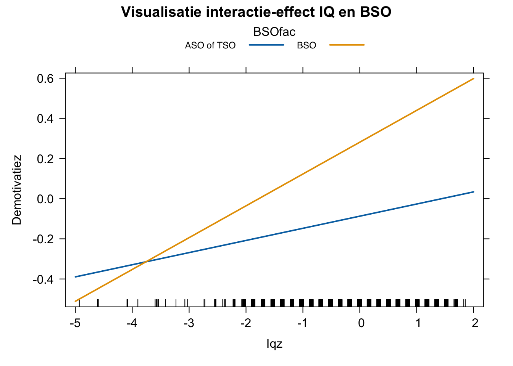

load("DataZSO8.RData")
source("OLP2 Functies.R")
library(car)ZSO 8
Voorbereiding
Voor deze ZSO ga je aan de slag met de dataset: DataZSO8.RData.RData. De data kan je downloaden door op onderstaande link te klikken met een rechtermuisklik.
Tip
Een goede workflow in RStudio is van cruciaal belang op lange termijn. In dit vak is het geen verplichting, maar werken met projecten in RStudio kan je leven een pak makkelijker maken.
Daarom raden we je aan om een nieuw project te maken per ZSO. Concreet betekent dit dat je tevens op je pc een map maakt per ZSO met daarin alle nodige files voor die ZSO:
- databestanden
OLP2 functies.Rfile- Je script met analyses (of Quarto document)
Meer uitleg over werken met projecten en Quarto documenten kan je vinden onder Extra materiaal (KLIK HIER)
OPDRACHTEN
Het databestand bevat gegevens van leerlingen in het 6de jaar secundair onderwijs. Belangrijkste doelstelling van het onderzoek waaruit deze data voortkomt, was de overgang naar hoger onderwijs verder te onderzoeken. In deze dataset maakten we een selectie van volgende variabelen:
Leerlingnummer: een identificatienummer voor leerlingen;Iq: de score die een leerling behaalde op een IQ toets;Begrlezen: behaald percentage op een toets aangaande begrijpend lezen;Ondvorm: onderwijsvorm waarin de leerling zit (1 = ASO ; 2 = BSO ; 3 = TSO);Demotivatiez: mate van demotivatie om verder te studeren als z-score;Willenz: mate van intrinsieke motivatie om verder te studeren als z-score;Moetenz: mate van extrinsieke motivatie om verder te studeren als z-score.
Je wenst grip te krijgen op welke leerlingen in meerdere of mindere mate gedemotiveerd zijn om verder te studeren. Daartoe ga je verschillende analysemodellen schatten die telkens opbouwen in moeilijkheid.
1.1 Een eerste model test de hypothese dat kinderen met een hoger Iq en betere schoolprestaties (hier gemeten a.d.h.v. ‘Begrlezen’) in mindere mate gedemotiveerd zijn (lager scoren op ‘Demotivatiez’). Doe de analyse om deze hypothese te toetsen en schrijf je conclusies neer. Zorg ervoor dat de schattingen niet afhankelijk zijn van de meetschaal die werd gehanteerd voor de verschillende variabelen.
1.2 In een tweede model wil je specifiek de hypothese nagaan dat BSO-leerlingen sterker gedemotiveerd zijn dan de overige leerlingen. Je wenst deze groep dus af te zetten t.o.v. de rest van de leerlingen. Doe hiertoe het nodige analysewerk. Houd daarbij rekening met de resultaten uit 1.1: enkel variabelen die een significant effect hadden neem je op als controlevariabelen. Interpreteer de resultaten grondig.
1.3 Vervolgens wil je nagaan of het steek houdt wat collega’s zeggen. Je hoort hen namelijk vertellen dat vooral in het BSO-leerlingen met een hoog Iq gedemotiveerd geraken om verder te studeren. Ze zeggen dus dat het verschil tussen ‘slimme’ en ‘domme’ leerlingen aangaande demotivatie in het BSO groter is dan in de overige twee onderwijsvormen. Klopt dit volgens de gegevens die hier verzameld zijn? Wees volledig in de beschrijving van de analyses. Geef ook aan welk van de effecten het sterkste is volgens dit laatste model.
1.4 Ga na welk van de drie geschatte modellen het beste bij de data past. Analyseer en beargumenteer welk model het beste past.
1.5 Tenslotte bereken je de verwachte score in de steekproef en in de populatie voor een leerling die:
a) les volgt in het ASO, 1 SD hoger scoort op ‘Iqz’ en 0.5 SD lager op ‘Begrlezenz’
b) les volgt in het BSO, 2 SD hoger scoort op ‘Iqz’ en 1.5 SD hoger op ‘Begrlezenz’
Hanteer hiervoor de output van het beste model.
RESPONSEN
Vooraleer we de analyses kunnen uitvoeren moeten we uiteraard de data inladen in R en tevens de OLP2 Functies activeren. Dit doen we bijvoorbeeld door gebruk te maken van de commando’s load( ) en source( ).
1.1
- Analyses
We maken gebruik van z-scores om er voor te zorgen dat de schattingen niet afhankelijk zijn van de meetschaal die werd gehanteerd.
DataZSO8$Iqz <- scale(DataZSO8$Iq)
DataZSO8$Begrlezenz <- scale(DataZSO8$Begrlezen)
Model1 <- lm(Demotivatiez ~ Iqz + Begrlezenz, data = DataZSO8)
summary(Model1)
Call:
lm(formula = Demotivatiez ~ Iqz + Begrlezenz, data = DataZSO8)
Residuals:
Min 1Q Median 3Q Max
-1.7764 -0.8135 -0.1589 0.6599 3.4039
Coefficients:
Estimate Std. Error t value Pr(>|t|)
(Intercept) -0.01592 0.01768 -0.901 0.36786
Iqz 0.06072 0.02253 2.695 0.00707 **
Begrlezenz -0.14939 0.01902 -7.852 5.55e-15 ***
---
Signif. codes: 0 '***' 0.001 '**' 0.01 '*' 0.05 '.' 0.1 ' ' 1
Residual standard error: 0.9879 on 3141 degrees of freedom
(560 observations deleted due to missingness)
Multiple R-squared: 0.01927, Adjusted R-squared: 0.01865
F-statistic: 30.86 on 2 and 3141 DF, p-value: 5.345e-14- Bespreking van de resultaten
Dit model verklaart 1.9% van de variantie in ‘Demotivatiez’ en is bovendien statistisch significant (F(2,3141) = 30.86, p < 0.001, Adj. \(R^2\) = 0.019). Dus ook in de populatie zullen IQ en begrijpend lezen een klein deel van de variantie (Adj. \(R^2\) = 0.019) in de mate van demotivatie verklaren.
Uit de parameterschattingen blijkt dat de hypothese dat kinderen met een hoger IQ en betere schoolprestaties lager scoren op ‘Demotivatiez’ niet volledig klopt. De hellingsgraad van ‘Iqz’ is 0.061 (\(\beta_1\) = 0.061, p = 0.007). Dit wil zeggen dat voor elke standaardafwijking die een leerling hoger scoort op IQ, de leerlingen 0.061 standaardafwijkingen hoger gaan scoren op ‘Demotivatiez’. (Omdat zowel onze onafhankelijke variabelen als afhankelijke variabele zijn opgenomen als z-score, mogen we de effecten volledig in SD interpreteren.) De p-waarde is 0.007 en dus kleiner dan 0.05. Je kan m.a.w. verwachten dat IQ ook in de populatie een positief effect heeft op demotivatie.
De hellingsgraad van ‘Begrlezenz’ is echter negatief (\(\beta_2\) = -0.149, p < 0.001). Dit wil zeggen dat voor elke standaardafwijking dat een leerling hoger scoort op ‘Begrlezenz’, hij 0.15 standaardafwijkingen lager scoort op ‘Demotivatiez’ en dus minder gedemotiveerd is. De p-waarde is kleiner dan 0.05, dus ook hier verwachten we dat in de populatie begrijpend lezen een negatief effect gaat hebben op demotivatie. We kunnen dus besluiten dat kinderen met een hoger IQ meer gedemotiveerd zijn en kinderen met betere schoolprestaties minder gedemotiveerd zullen zijn in de populatie.
Het intercept (\(\beta_0\) = -0.016, p = 0.368) is de score op ‘Demotivatiez’ voor een leerling die 0 scoort op ‘Iqz’ en ‘Begrlezenz’. Aangezien zowel ‘Iqz’ als ‘Begrlezenz’ z-scores zijn, betekent 0 scoren hier hetzelfde als gemiddeld scoren op Iq en Begrijpend lezen. De schatting voor het intercept is niet statistisch significant (p = 0.368). De kans dat de nulhypothese opgaat is dus te groot om deze te kunnen verwerpen. In de populatie is de verwachte score op ‘Demotivatiez’ dus 0. Aangezien ook ‘Demotivatiez’ een z-score is, betekent dit hetzelfde als dat er wordt verwacht dat er in de populatie gemiddeld gescoord zal worden op demotivatie.
1.2
- Analyses
Om hierop een antwoord te kunnen geven, maken we een dummyvariabele aan die aanstaat voor BSO en waarop leerlingen uit het ASO en TSO dus 0 scoren.
DataZSO8$BSO <- (DataZSO8$Ondvorm == 2) * 1
table(DataZSO8$BSO , DataZSO8$Ondvorm) # check of dummy goed is aangemaakt
1 2 3
0 1730 0 1020
1 0 920 0Model2 <- lm(Demotivatiez ~ Iqz + Begrlezenz + BSO, data = DataZSO8)
summary(Model2)
Call:
lm(formula = Demotivatiez ~ Iqz + Begrlezenz + BSO, data = DataZSO8)
Residuals:
Min 1Q Median 3Q Max
-1.6451 -0.7771 -0.1278 0.6544 3.3951
Coefficients:
Estimate Std. Error t value Pr(>|t|)
(Intercept) -0.09255 0.02110 -4.386 1.19e-05 ***
Iqz 0.08966 0.02289 3.916 9.18e-05 ***
Begrlezenz -0.08399 0.02137 -3.930 8.66e-05 ***
BSO 0.34164 0.05112 6.683 2.77e-11 ***
---
Signif. codes: 0 '***' 0.001 '**' 0.01 '*' 0.05 '.' 0.1 ' ' 1
Residual standard error: 0.9823 on 3119 degrees of freedom
(581 observations deleted due to missingness)
Multiple R-squared: 0.03328, Adjusted R-squared: 0.03235
F-statistic: 35.79 on 3 and 3119 DF, p-value: < 2.2e-16- Bespreking van de resultaten
Uit de Adjusted \(R^2\) kunnen we aflezen dat 3.2% van de variantie in de ‘Demotivatiez’ kan worden verklaard door het model. Gezien de p-waarde kleiner is dan 0.05 (F(3,3119) = 35.79, p < 0.001, Adj. \(R^2\) = 0.032) kunnen we zeggen dat IQ, score op begrijpend lezen en al dan niet les volgen in het BSO met een grote zekerheid ook een klein deel van de variantie in de afhankelijke variabele (‘Demotivatiez’) in de populatie zal verklaren.
Het intercept bedraagt -0.093. Dit wil zeggen dat een leerling in de steekproef uit het ASO of TSO die gemiddeld scoort op IQ en op begrijpend lezen een score van -0.093 SD op demotivatie zal behalen. Het intercept is statistisch significant afwijkend van 0 (\(\beta_0\) = -0.093, p < 0.001). We verwachten m.a.w. dat ook in de populatie leerlingen uit het ASO of TSO die gemiddeld scoren op IQ en begrijpend lezen, 0.093 standaardafwijkingen lager scoren dan gemiddeld op demotivatie.
Voor elke standaardafwijking dat een leerling hoger scoort op IQ, scoort deze leerlingen 0.09 standaardafwijkingen hoger op demotivatie, ongeacht de score op begrijpend lezen en onafhankelijk van de onderwijsvorm waarin de leerling les volgt. IQ heeft dus een positief effect op demotivatie en dit geldt ook voor de populatie (\(\beta_1\) = 0.09, p < 0.001). Voor elke standaardafwijking hoger scoren op begrijpend lezen daalt de score op ‘Demotivatiez’ met 0.084 standaardafwijkingen, onafhankelijk van de score op IQ en de onderwijsvorm. Hoger scoren op begrijpend lezen heeft dus een negatieve invloed op de mate waarin leerlingen gedemotiveerd zijn. Dit geldt bovendien niet alleen voor de steekproef, maar ook voor de populatie (\(\beta_2\) = -0.084, p < 0.001). Voor leerlingen uit het BSO verwachten we dat de score op demotivatie 0.34 SD hoger ligt dan bij leerlingen uit ASO of TSO. BSO leerlingen zijn dus inderdaad sterker gedemotiveerd dan de andere leerlingen, ongeacht hun IQ of score op begrijpend lezen. Ook dit effect is statistisch significant (\(\beta_3\) = 0.342, p < 0.001).
1.3
- Analyses
In deze vraag wordt verwezen naar een interactie-effect tussen ‘BSO’ en ‘Iqz’. Dit dienen we toe te voegen aan het model.
Model3 <- lm(Demotivatiez ~ Iqz + Begrlezenz + BSO + (BSO*Iqz),data = DataZSO8)
summary(Model3)
Call:
lm(formula = Demotivatiez ~ Iqz + Begrlezenz + BSO + (BSO * Iqz),
data = DataZSO8)
Residuals:
Min 1Q Median 3Q Max
-1.7134 -0.7735 -0.1300 0.6594 3.3838
Coefficients:
Estimate Std. Error t value Pr(>|t|)
(Intercept) -0.08608 0.02133 -4.035 5.60e-05 ***
Iqz 0.06049 0.02708 2.234 0.0255 *
Begrlezenz -0.08420 0.02136 -3.942 8.26e-05 ***
BSO 0.36847 0.05280 6.978 3.64e-12 ***
Iqz:BSO 0.09801 0.04862 2.016 0.0439 *
---
Signif. codes: 0 '***' 0.001 '**' 0.01 '*' 0.05 '.' 0.1 ' ' 1
Residual standard error: 0.9818 on 3118 degrees of freedom
(581 observations deleted due to missingness)
Multiple R-squared: 0.03454, Adjusted R-squared: 0.0333
F-statistic: 27.89 on 4 and 3118 DF, p-value: < 2.2e-16- Resultaten bespreken
Volgens de Adjusted \(R^2\) verklaart het model 3.33% van de variantie in ‘Demotivatiez’. Gezien het resultaat van de F-test (F(4,3118) = 27.89, p < 0.001, Adj. \(R^2\) = 0.033) kunnen we ook hier weer stellen dat dit model met grote waarschijnlijkheid ook in de populatie een deel van de verschillen in ‘Demotivatiez’ zal verklaren.
Het intercept bedraagt -0.086 (\(\beta_0\) = -0.086, p < 0.001). Een leerling die behoort tot ASO of TSO en gemiddeld scoort op begrijpend lezen en op IQ zal dus 0.086 SD lager scoren dan gemiddeld op demotivatie. Het intercept is statistisch significant. We verwachten dit ook terug te vinden in de populatie.
Op basis van de parameterschattingen kunnen we verder stellen dat als diezelfde leerling (gemiddelde score op Iq en op begrijpend lezen) les volgt in het BSO, deze 0.368 SD hoger scoort op ‘Demotivatiez’ (\(\beta_1\) = 0.368, p < 0.001). Een leerling uit BSO is dus meer gedemotiveerd dan leerlingen uit het ASO of TSO, ongeacht de score op IQ of begrijpend lezen.
Het effect van ‘Begrlezenz’ is negatief. Voor elke standaardafwijking die een leerling hoger scoort op ‘Begrlezenz’ scoort hij 0.084 standaardafwijkingen lager op ‘Demotivatiez’ (\(\beta_2\) = -0.084, p < 0.001), ongeacht zijn score op IQ en onafhankelijk van tot welke onderwijsvorm hij behoort.
Tenslotte blijkt uit de resultaten dat het effect van ‘Iqz’ inderdaad anders is voor leerlingen uit het BSO dan voor leerlingen uit het ASO of TSO. Een leerling uit ASO of TSO zal voor elke standaardafwijking die hij hoger scoort op IQ, 0.06 SD hoger scoren op demotivatie (\(\beta_3\) = 0.06, p = 0.026), ongeacht zijn score op ‘Begrlezenz’. Een leerling uit BSO zal daarentegen voor elke standaardafwijking die hij hoger scoort op IQ, 0.158 SD hoger scoren op ‘Demotivatiez’ (0.158 = 0,06049 + 0,09801). Het effect van IQ op demotivatie is dus inderdaad groter voor BSO-leerlingen. Onderstaande figuur visualiseert dit interactie-effect. Gezien alle parameterschattingen statistisch significant zijn (p < 0.05) zullen deze in de populatie met grote waarschijnlijkheid ook verschillend zijn van nul. Ook het interactie-effect is statistisch significant (p < 0.05). Het effect van IQ op demotivatie is dus ook in de populatie groter in het BSO dan in de twee overige onderwijsvormen.
- Uitdieping: figuur maken
# EXTRAATJE VOOR DE LIEFHEBBERS!!
# voor wie graag zelf interactie-effecten tussen een kwantitatieve
# en een kwalitatieve variabele plot
#maak van de dummy een factor
DataZSO8$BSOfac <- factor(DataZSO8$BSO, levels=c(0,1), labels=c("ASO of TSO","BSO"))
#herschat het model met de variabele als factor
Model3bis <- lm(Demotivatiez ~ Iqz + Begrlezenz + BSOfac + (BSOfac*Iqz),data = DataZSO8)
summary(Model3bis)
Call:
lm(formula = Demotivatiez ~ Iqz + Begrlezenz + BSOfac + (BSOfac *
Iqz), data = DataZSO8)
Residuals:
Min 1Q Median 3Q Max
-1.7134 -0.7735 -0.1300 0.6594 3.3838
Coefficients:
Estimate Std. Error t value Pr(>|t|)
(Intercept) -0.08608 0.02133 -4.035 5.60e-05 ***
Iqz 0.06049 0.02708 2.234 0.0255 *
Begrlezenz -0.08420 0.02136 -3.942 8.26e-05 ***
BSOfacBSO 0.36847 0.05280 6.978 3.64e-12 ***
Iqz:BSOfacBSO 0.09801 0.04862 2.016 0.0439 *
---
Signif. codes: 0 '***' 0.001 '**' 0.01 '*' 0.05 '.' 0.1 ' ' 1
Residual standard error: 0.9818 on 3118 degrees of freedom
(581 observations deleted due to missingness)
Multiple R-squared: 0.03454, Adjusted R-squared: 0.0333
F-statistic: 27.89 on 4 and 3118 DF, p-value: < 2.2e-16# eerst pakket ‘effects’ installeren! (staat niet in OLP)
library(effects)
plot(effect("Iqz:BSOfac",Model3bis),
multiline=T,
main="Visualisatie interactie-effect IQ en BSO")
1.4
- Analyses
Om modellen met elkaar te kunnen vergelijken dienen ze op dezelfde dataset geschat te zijn. Eigenlijk hadden we bij de start van de ZSO reeds kunnen opteren om een dataset aan te maken via na.omit( ) waarin we enkel observaties weerhouden die geen ontbrekende waarden hebben voor al onze gehanteerde variabelen. We doen dit nu.
DataZSO8b <- na.omit(DataZSO8[c('Iqz' , 'Demotivatiez' , 'Begrlezenz' , 'BSO')])
Model1b <- lm(Demotivatiez ~ Iqz + Begrlezenz, data = DataZSO8b)
Model2b <- lm(Demotivatiez ~ Iqz + Begrlezenz + BSO, data=DataZSO8b)
Model3b <- lm(Demotivatiez ~ Iqz + Begrlezenz + BSO + (BSO*Iqz), data=DataZSO8b)
anova(Model1b , Model2b , Model3b)Analysis of Variance Table
Model 1: Demotivatiez ~ Iqz + Begrlezenz
Model 2: Demotivatiez ~ Iqz + Begrlezenz + BSO
Model 3: Demotivatiez ~ Iqz + Begrlezenz + BSO + (BSO * Iqz)
Res.Df RSS Df Sum of Sq F Pr(>F)
1 3120 3052.4
2 3119 3009.3 1 43.088 44.7016 2.708e-11 ***
3 3118 3005.4 1 3.917 4.0636 0.0439 *
---
Signif. codes: 0 '***' 0.001 '**' 0.01 '*' 0.05 '.' 0.1 ' ' 1- Resultaten bespreken
Uit de output van de anova blijkt dat Model 3 de meeste variantie verklaart in de onafhankelijke variabele ‘Demotivatiez’. Dit blijkt uit de Residual Sum of Squares (RSS) die het laagst is voor het derde model. Dit onderstreept het belang van het opnemen van interactie-effect tussen Iq en BSO in het model.
Belangrijker, wanneer we kijken naar de p-waarde die de significantie van het verschil in RSS tussen Model2 en Model3 toetst (F(1) = 4.064, p = 0.044), dan zien we dat Model3 ook statistisch significant beter is. Dus ook in de populatie zal Model3 met het interactie-effect meer variantie verklaren in demotivatie dan Model2.
1.5
Uit de analyses in 1.4 blijkt dat Model3 het beste ‘Demotivatiez’ verklaart. We hanteren dus de schattingen uit dat model om de voorspelde scores te berekenen. We herhalen eerst de output voor dat model.
summary(Model3)
Call:
lm(formula = Demotivatiez ~ Iqz + Begrlezenz + BSO + (BSO * Iqz),
data = DataZSO8)
Residuals:
Min 1Q Median 3Q Max
-1.7134 -0.7735 -0.1300 0.6594 3.3838
Coefficients:
Estimate Std. Error t value Pr(>|t|)
(Intercept) -0.08608 0.02133 -4.035 5.60e-05 ***
Iqz 0.06049 0.02708 2.234 0.0255 *
Begrlezenz -0.08420 0.02136 -3.942 8.26e-05 ***
BSO 0.36847 0.05280 6.978 3.64e-12 ***
Iqz:BSO 0.09801 0.04862 2.016 0.0439 *
---
Signif. codes: 0 '***' 0.001 '**' 0.01 '*' 0.05 '.' 0.1 ' ' 1
Residual standard error: 0.9818 on 3118 degrees of freedom
(581 observations deleted due to missingness)
Multiple R-squared: 0.03454, Adjusted R-squared: 0.0333
F-statistic: 27.89 on 4 and 3118 DF, p-value: < 2.2e-16Voor een leerling die les volgt in het ASO, 1 SD hoger scoort op ‘Iqz’ en 0.5 SD lager op ‘Begrlezenz’ verwachten we dat deze in de steekproef en de populatie de volgende scores behaalt:
- in de steekproef: -0.086 + 0.06 + 0.042 = 0.016
- in de populatie: -0.086 + 0.06 + 0.042 = 0.016
Immers, de berekening gaat als volgt voor de populatie en de steekproef (voor beide gelijk, gegeven alle parameterschattingen statistisch significant zijn):
\[\hat{y} = \begin{array}{c} \color{blue}{\beta_0} + \color{blue}{\beta_1}*\color{red}{\text{Iqz}} + \color{blue}{\beta_2}*\color{red}{\text{Begrlezenz}}+ \color{blue}{\beta_3}*\color{red}{\text{BSO}} + \color{blue}{\beta_4}*\color{red}{\text{Iqz}}*\color{red}{\text{BSO}}\\ \color{blue}{-0.086} + \color{blue}{0.060}*\color{red}{\text{1}} + \color{blue}{-0.084}*\color{red}{\text{-0.5}} + \color{blue}{0.368}*\color{red}{\text{0}} + \color{blue}{0.098}*\color{red}{\text{1}}*\color{red}{\text{0}} \end{array} = 0.016\]
Voor een leerling die les volgt in het BSO, 2 SD hoger scoort op ‘Iqz’ en 1.5 SD hoger op ‘Begrlezenz’ verwachten we dat deze in de steekproef en de populatie de volgende scores behaalt:
in de steekproef: -0.086 + 0.12 + -0.126 + 0.368 + 0.196 = 0.472 in de populatie: -0.086 + 0.12 + -0.126 + 0.368 + 0.196 = 0.472
De berekening in meer detail:
\[\hat{y} = \begin{array}{c} \color{blue}{\beta_0} + \color{blue}{\beta_1}*\color{red}{\text{Iqz}} + \color{blue}{\beta_2}*\color{red}{\text{Begrlezenz}} + \color{blue}{\beta_3}*\color{red}{\text{BSO}} + \color{blue}{\beta_4}*\color{red}{\text{Iqz}}*\color{red}{\text{BSO}}\\ \color{blue}{-0.086} + \color{blue}{0.060}*\color{red}{\text{2}} + \color{blue}{-0.084}*\color{red}{\text{1.5}} + \color{blue}{0.368}*\color{red}{\text{1}} + \color{blue}{0.098}*\color{red}{\text{2}}*\color{red}{\text{1}} \end{array} = 0.472\]